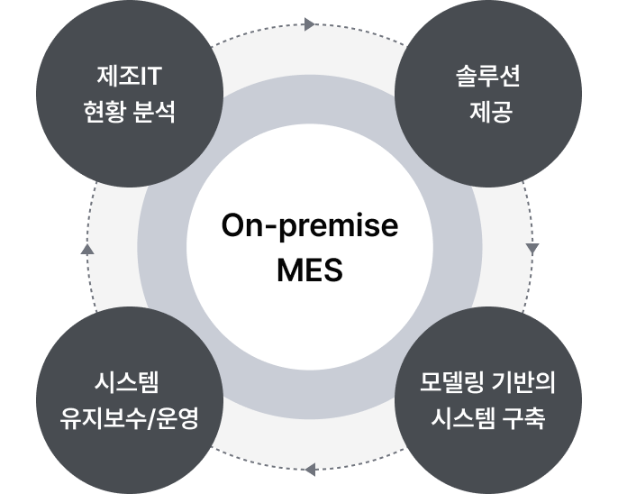

서비스 개요
On-premise란 기업 자체적으로 보유한 서버에 직접 설치하여 운영하는 방식을 말합니다. 미라콤아이앤씨의 MES 구축 서비스는 컨설팅부터 솔루션 제공, 시스템 구축 및 운영까지 고객의 생산 환경에 맞는 토탈 서비스를 제공합니다.

On-Premise MES 제조IT 현황 분석 솔루션 제공 시스템 유지보수/운영 모델링 기반의 시스템 구축
On-Premise MES 제조IT 현황 분석 솔루션 제공 시스템 유지보수/운영 모델링 기반의 시스템 구축
-
- 1
제조IT 현황 분석
- 제조 현장의 시스템, 데이터, 레거시 인터페이스 및 프로세스 현황 분석
-
- 2
솔루션 제공
- 제조 실행 최적화를 위한 MES, QMS/EES, 대시보드 및 KPI 리포트 솔루션 제공
-
- 3
모델링 기반의 시스템 구축
- 표준 프로세스 기반 모델링 및 고객 맞춤형 Customized 시스템 구축
-
- 4
시스템 유지보수/운영
- 지속적인 시스템 관리, 신속한 기술 지원 및 성능 최적화 수행